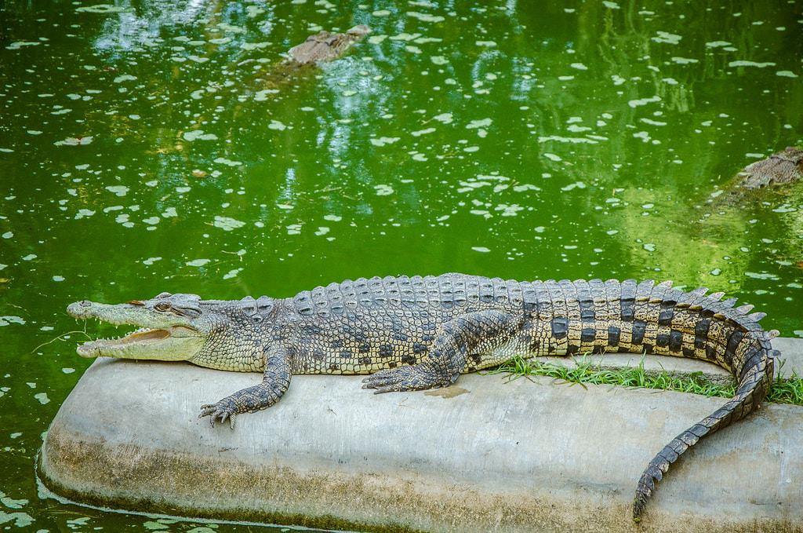
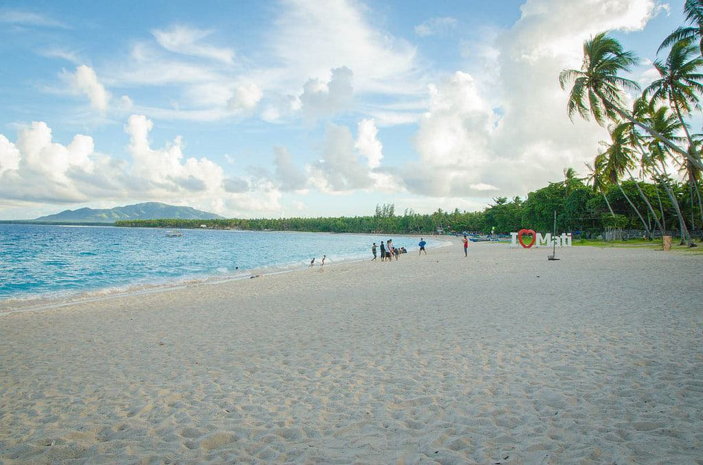
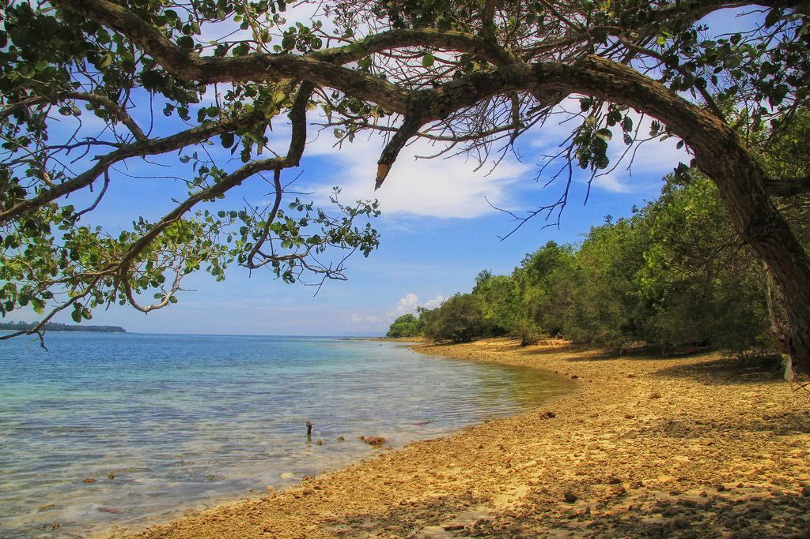
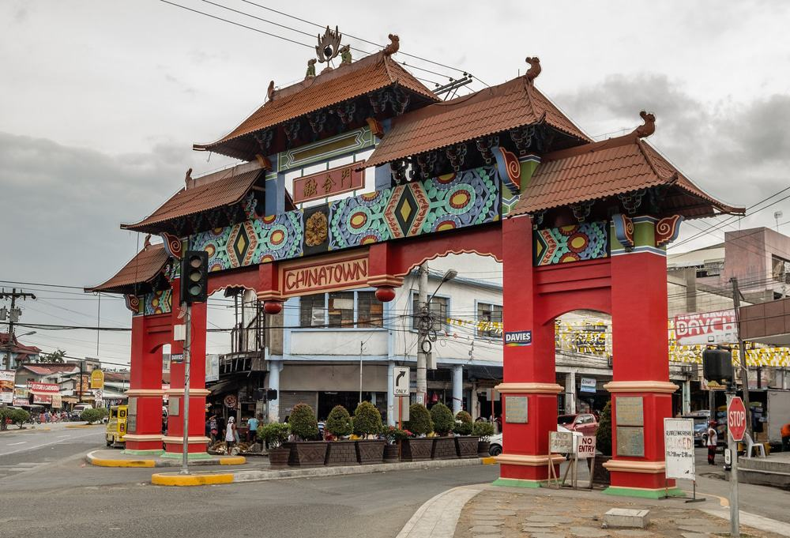
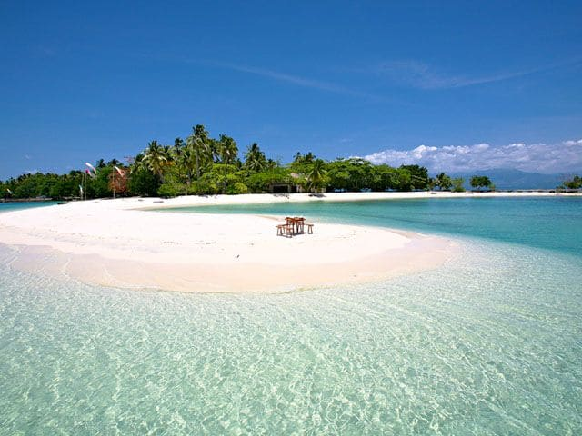
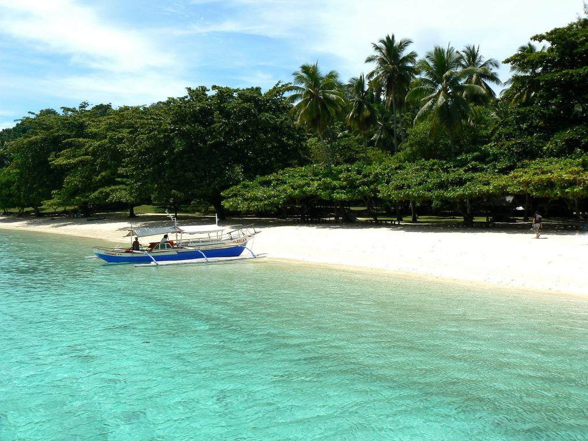
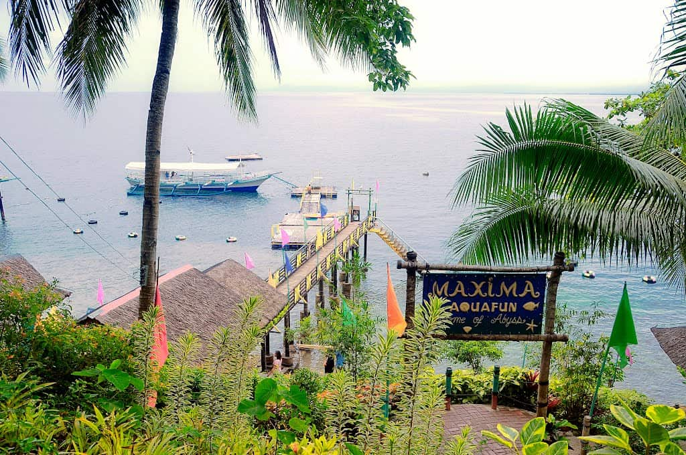
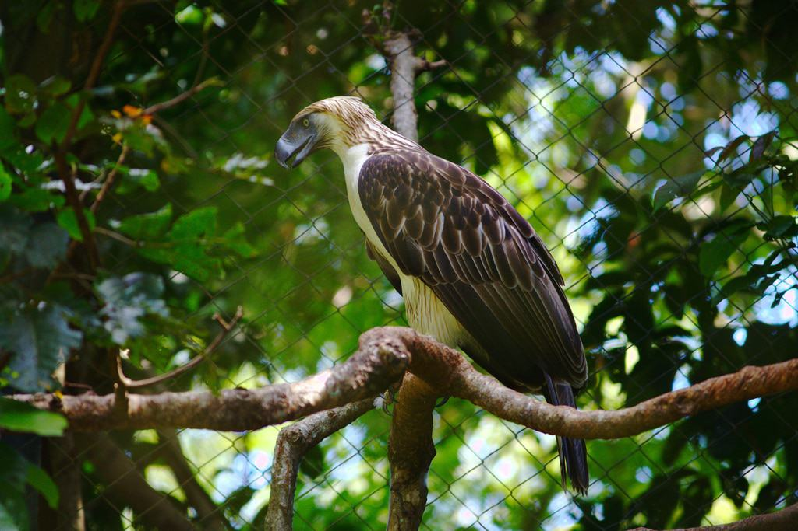

DAVAO ITINERARY:
ULTIMATE TRAVEL GUIDE
Read more of our Davao Guide

DAVAO ITINERARY:
ULTIMATE TRAVEL GUIDE
DAVAO FOODS
DAVAO
There is something in Davao city that you won’t experience often in other areas of the Philippines, and that is a local experience. As Davao isn’t the #1 rated tourist spot in the Philippines, you won’t bump into as many resorts, western restaurants, or high-priced tours, but what you will get is real Filipino food, experiences, prices, and interactions.
If you start getting that craving for white sand, Davao is only a boat ride away from some of the most beautiful islands in the Philippines where you can enjoy spectacular beaches with plenty of water activities for a day or two.
Traveling – it leaves you speechless,
then turns you into a storyteller
One of the most popular tourist destinations in Davao city is the Crocodile Park, which is home to thousands of crocodiles. Yes, thousands!
They’ve got both freshwater and saltwater crocs that are bred and born on site. You can visit the incubator room where you’ll see hundreds of crocodile eggs growing baby crocs!
Beyond the crocodiles, you’ll also have the chance to see monkeys, snakes, birds, and other reptiles. The Crocodile Park offers educational tours, lectures, and offers public awareness of wildlife conservation efforts. All around, a great place.
If you want full eagle-eye views of the city, you’ll want to make your way to Jack’s Ridge.
In addition to marvelous views, there are two restaurants to choose from when you make your way up here: Karlo’s Gourmet which serves coffee and baked treats, and Taklobo where you can sit in an open-air dining area sharing big portions of beautifully plated Filipino food.
There is also quite a bit of history on Jack’s Ridge as this land was previously used as the headquarters for retreating Japanese forces during World War II. You can read all about it at the Jack’s Ridge monument. Just goes to show that you’re never too far from a history lesson in the Philippines.
The most beautiful beach on the mainland is hands down Dahican Beach where 7 kilometers of gorgeous sand and turquoise water awaits. Rent a lounge chair for a day or bring your towel so soak up the sun for as long as you’d like.
If you’d like a more adventurous beach experience, there are shacks along the beach renting boogie boards and surfboards perfect for catching some waves. Some of the resorts here offer activities such as island hopping tours that leave from Dahican Beach.
Bring a tent and you can pitch it on the beach overnight for a small fee. Fall asleep to the sounds of waves crashing, wake up to fresh morning air then go take a bath in the sea!
Take a day trip to Kopiat Island off the coast of Davao. This desolate little island is home to heaps of wildlife and beautiful nature. You can go with tour group, which transports you via an exhilarating speedboat ride from the mainland. You’ll set foot ashore within a half an hour. These tours include a visit to the Lubi (coconut) plantation, some incredible food, coffee and desert. And you will of course have time to frolic on the beach as well.
If you’d like a more carefree day, hire a private boat from Davao and have them take you on a 1-2 hour tour where you can come ashore and explore the white sand beaches lined with overhanging coconut trees.
I bet you didn’t expect to find such a huge China Town in Davao. The Mindanao China Town is a collection of Chinese restaurants, shops, business, and malls spread out over 44 Hectares. Many of the businesses here are actually run by Chinese Filipinos who hold on strong to their Chinese roots.
You’ll enter China town under a traditional bright red Chinese archway with a shingled roof and be transported to a different universe- or at least it feels that way.
Visit the Long Hua Temple that is home to Kung Fu monks or the Mindanao Taoist Temple with beautiful Chinese architecture. Stop in some malls where you can buy electronics and makeup. And of course, eat everything!
Gather 10 of your favorite people and plan the most incredible overnight stay on your very own private island off the coast of Davao! Island Buenavista is a small, pristine island with white sand beaches, clear water, full staff, comfortable accommodation, delicious meals, and water activities, if you please.
For just PhP 105,000, your crew gets all of that to themselves! The island is yours, which means complete privacy and total security with no day trips from random tourists. This is your chance to live like a celebrity!
People’s Park is a nice place to come where you can breath in some fresh air, stretch your legs without, be one with nature, and ponder the meaning behind some interesting art.
Created by then mayor President Duerte in 2007, this park is 4 acres of sprawling tropical rainforest, ponds, waterfalls, shady trees, and even some wild eagles.
Sit in the park and feed the pigeons, exercise with a run around the colorfully paved paths, or even take a public Zumba class with literally hundreds of locals (every Sunday at 6am).
The entrance fee for Isla Reta Beach Resort will grant you a day pass that includes the use of the pavilion, picnic tables, Volley Ball court, open function hall, and an outdoor grill.
Take a quick pump boat from Davao city along with your picnic goods and enjoy a day on this beautiful little island grilling and relaxing with friends. The scenery offers that classic Philippines combination of white sand and turquoise water, but instead of coconut trees, you have big billowy trees that provide some much-needed shade.
If you choose to stay overnight, you can rent a tent and bedding or stay in one of the accommodation choices including dorms.
Set your inner child free at Maxima Aquafun Resort on Samal Island, just a quick boat ride away from Davao city.
For PhP 300, adults can enjoy a 40-meter super slide that spits you out into the sea, and a water blob that catapults your into the air.
This resort also offers water activities such as banana boat rides, snorkeling, jet skiing, and kayaking. Dry off on the canopy walk with a suspended bridge that you can rappel down. It will be an adrenaline-filled day!
Every dollar that comes through the Philippine Eagle Center is put towards Eagle conservation and education. This incredible center dedicates time and efforts toward protecting endangered eagle species while opening up an interesting platform for the public.
During your visit, you will watch eagles feeding on raw meat as they cut into it with their sharp claws and beak, watch eagles soar around the property with huge wingspans, and take some up-close and personal photos!
There are also huge snakes, monkeys, and an assortment of endangered plant species to see.
